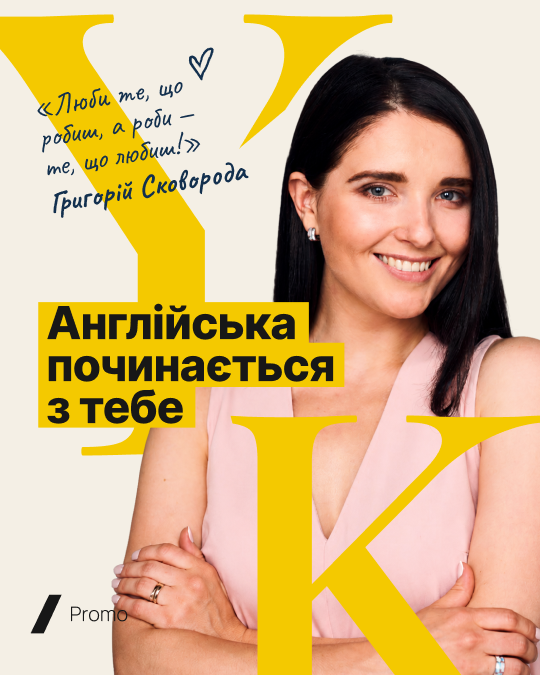
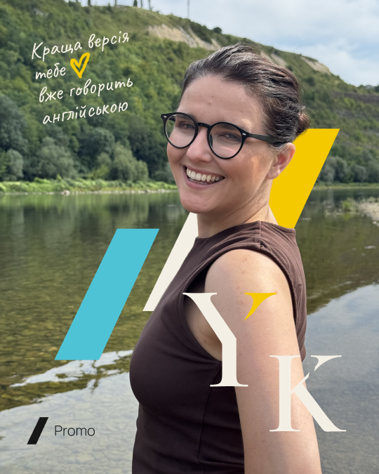
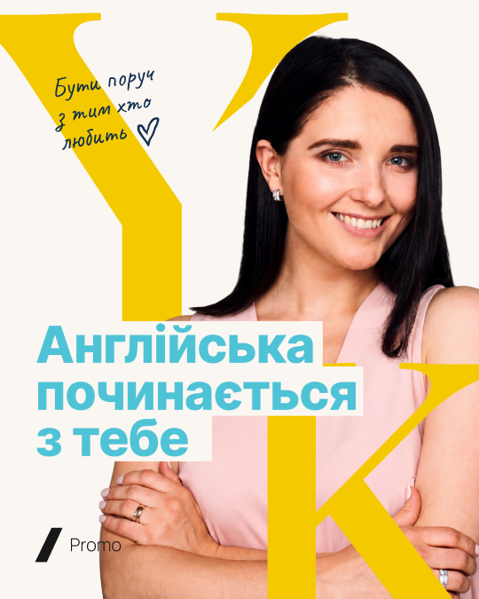
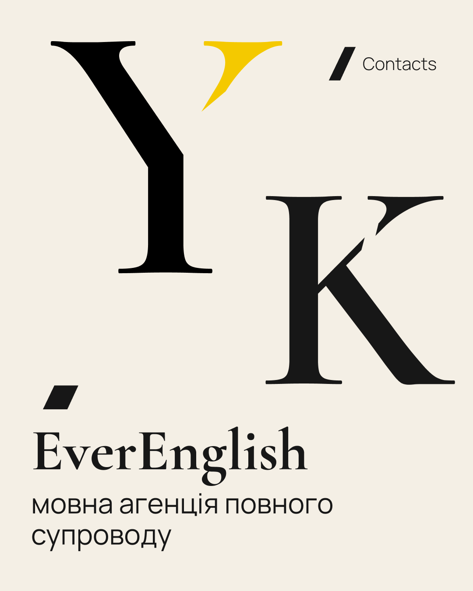
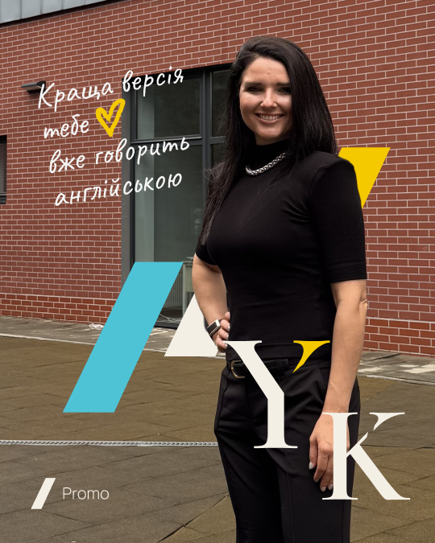
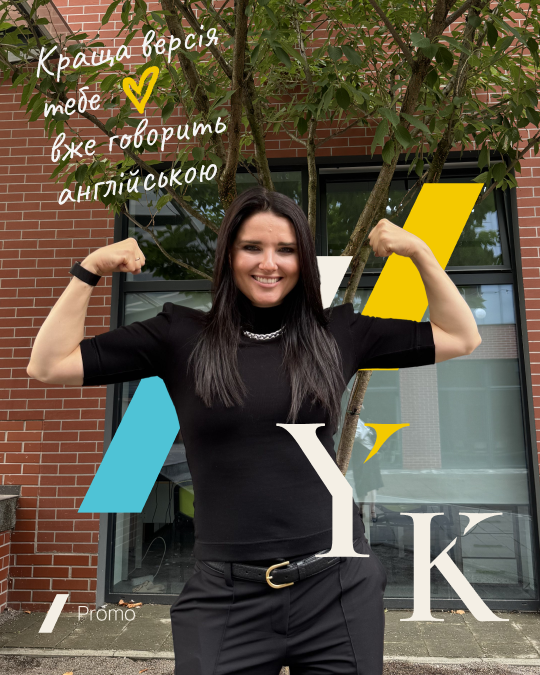
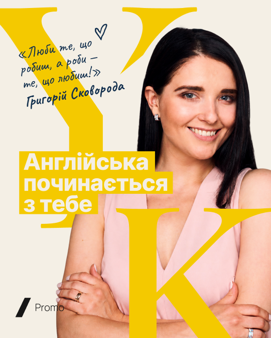

EVERENGLISH ↗
МОВА, ЩО ВІДКРИВАЄ МОЖЛИВОСТІ
Англійська
вашого
масштабу.
Для тих, хто формує рішення,
команди та зміни.
YANA KOZACHENKO
01 — 03
ОСОБИСТИЙ БРЕНД · SOCIAL MEDIA GUIDE
English trainer & founder of Ever English
Впізнаваний характер. Чіткі ідеї.
Впевнена англійська.

01 / ІНТЕРАКТИВНА МАЙСТЕРНЯ
Змінюй кольори та одразу дивись,
як вони працюють у дописі чи сторіз.
МОВА, ЩО ВІДКРИВАЄ МОЖЛИВОСТІ
Для тих, хто формує рішення,
команди та зміни.
Живе прев’ю · демонстраційний макет
КОЛЬОРОВИЙ СЦЕНАРІЙ
Твоє поєднання зберігається в цьому браузері. Основна палітра бренду залишається нижче.
02 / BRAND COLORS
Натисни на колір, щоб скопіювати HEX.
03 / TYPOGRAPHY
Мова твоїх можливостей.
Ім’я, редакційні заголовки та курсивні акценти. Орієнтир у гайді: 54 / 64.
Завантажити шрифт ↗Clear ideas.
Confident English.
Пояснення, підписи та навігація. Заголовок 48 / 58, підпис 16 / 19.
Завантажити шрифт ↗Англійська працює на твої цілі
Короткі рукописні фрази та підписи. Робоча вага Medium 500.
Завантажити шрифт ↗04 / GRAPHIC LANGUAGE
Один головний прийом у макеті:
монограма або похилі штрихи.
Масштабуй, зміщуй та обрізай краєм кадру. Лише латинські YK.
Похилий штрих із коротким верхнім елементом. Виразний акцент.
Висхідні штрихи: розвиток, результати та перехід між рівнями.
05 / INSTAGRAM COMPOSITION
Фото, кольорова площина, фото.
Ритм, який тримає історію разом.






Кольоровий фон, великий заголовок, мінімум зайвого.
Велике фото. Текст не перекриває обличчя.
Кремова площина та монограма дають стрічці повітря.
Демонстраційна сітка 3 × 3.
06 / ПЕРЕД ПУБЛІКАЦІЄЮ
01Одна головна теза на макет.
02Заголовок читається у зменшеному прев’ю.
03Текст не перекриває обличчя.
04Один прийом: монограма або штрихи.
05Кольори з палітри, достатній контраст.
06Перевірено ритм сусідніх публікацій.